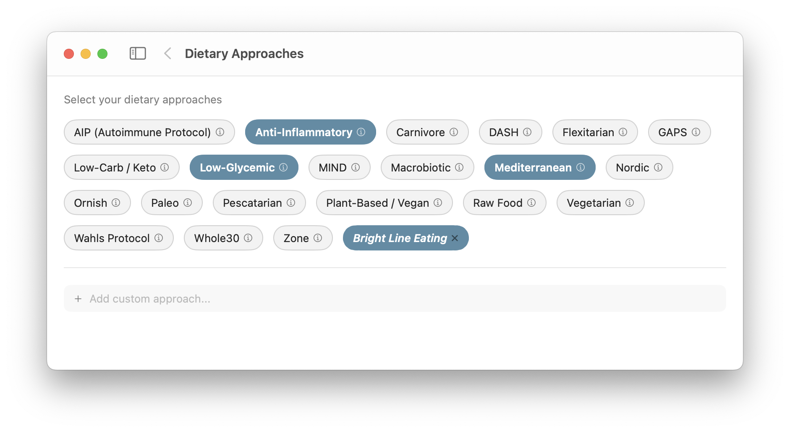
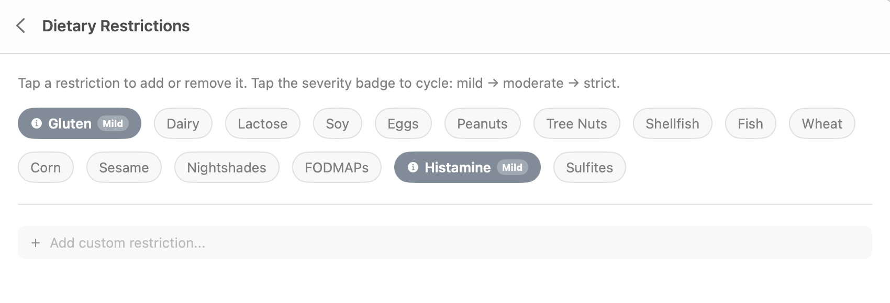
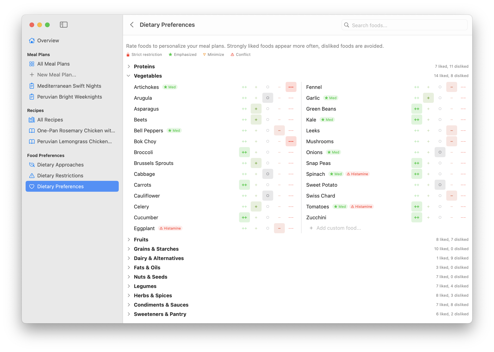
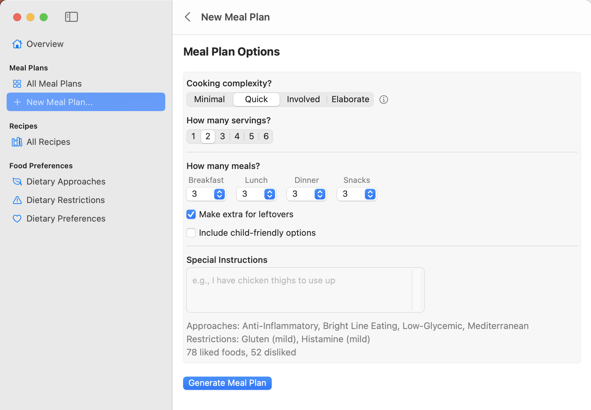
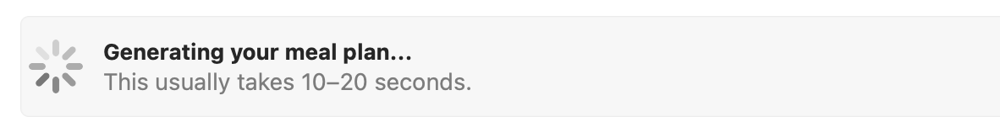
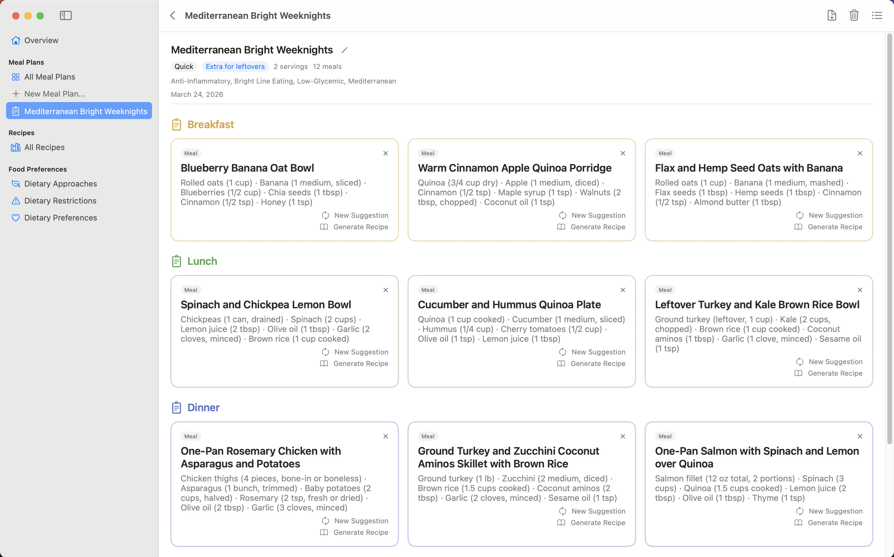
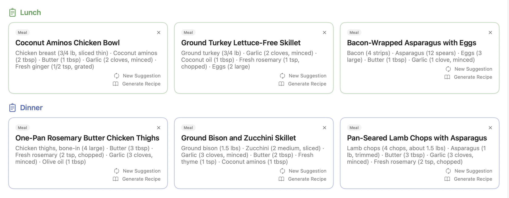
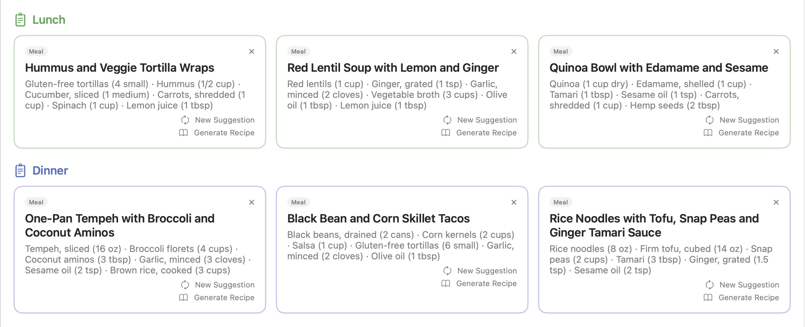
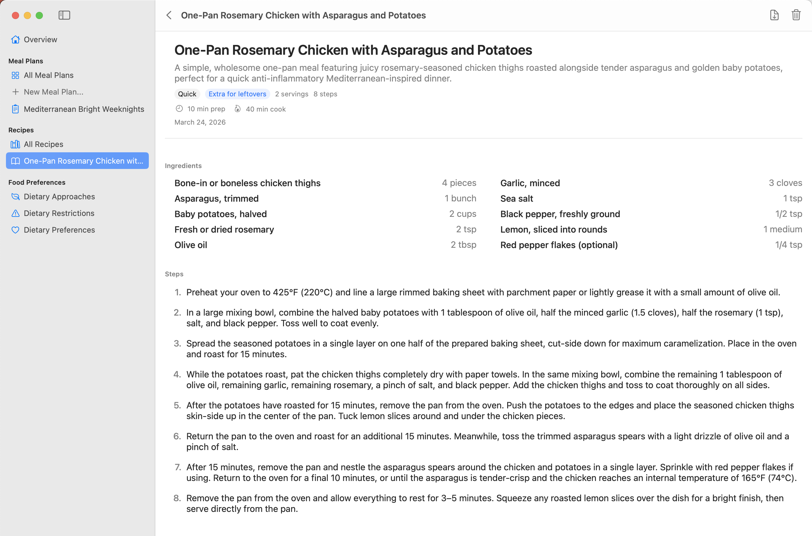
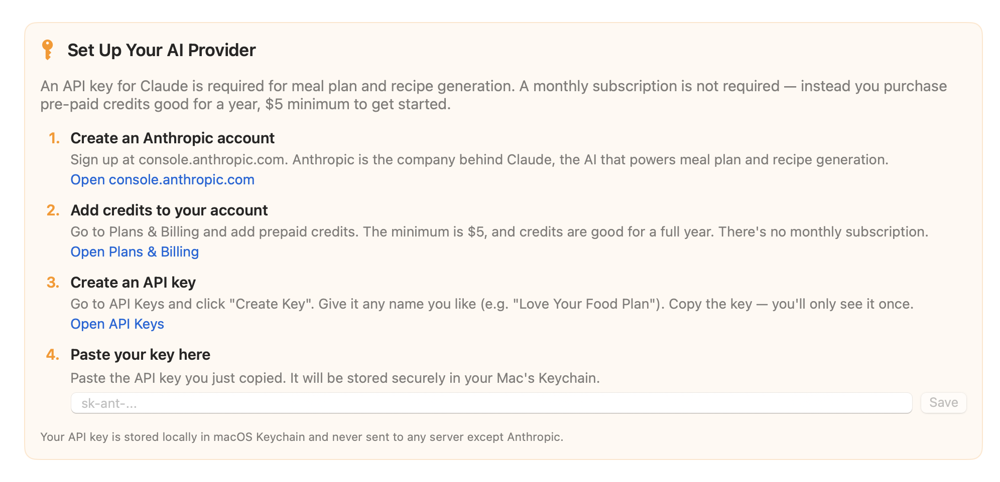

AI-powered meal plans built around your dietary approaches, restrictions, and personal preferences.
Old-school macOS app. No login. No cloud.
When you want to change your food plan, starting with recipes isn't helpful. They're too detailed, you have to sift through a million ingredients to check for restrictions, and recipe websites are notoriously cluttered, difficult to use, and filled with ads.
Instead, start with what you like and what you need to avoid, and use AI to generate meal plans for you — maybe you want to make leftovers, maybe you need some child-friendly options — and when you see meals you like, you can generate recipes.
If you've ever struggled to change your food plan and always keep reverting to the same old things you're already familiar bored with, it's exciting to see breakfasts, lunches, dinners, and snacks that sound like you'd love them!
Just click the ones you want to use. Click the info button to get a description — maybe you'll want to try a new approach. Add custom approaches, Claude will figure it out.


Click the ones that apply to you or your family. Set each to Mild, Moderate, or Strict and the meal selections will match. Custom restrictions welcome.
In five minutes you can design a set of preferences that guarantee you'll like the meals suggested. Click once for each food — from Strong Like to Strong Dislike.


Set cooking complexity from minimal assembly to elaborate weekend cooking. Choose how many breakfasts, lunches, dinners, and snacks. Add leftovers, child-friendly options, or special instructions.
Click Generate and wait ten seconds.

If one doesn't appeal, click "New Suggestion" and Claude will make another, avoiding ingredients already used in surrounding meals. Use it as a weekly plan or just a reference for new ideas.

Committed carnivore? We've got you.

Fully vegan? Every meal fits.

Click "Generate Recipe" and get a detailed recipe with ingredients, cooking steps, and NO CLUTTER.
Prints great too — both recipes and meal plans have excellent PDF export. Click the download icon in the upper right corner.

You need a Claude "API key" to use the AI features. It's simple, and we step you through it. There's no subscription — you create an account with Claude (made by Anthropic) and purchase a minimum of $5 in credits. The credits last for a year.
We track the costs in the app for you — a typical meal plan costs a few cents, a recipe is usually a penny or two. $5 will go a long way. (You pay Anthropic directly — we never see your data or take a cut.)

Currently fully free! No demo mode, no ads.
Download for Mac v0.2.1Requires macOS 15 Sequoia or later